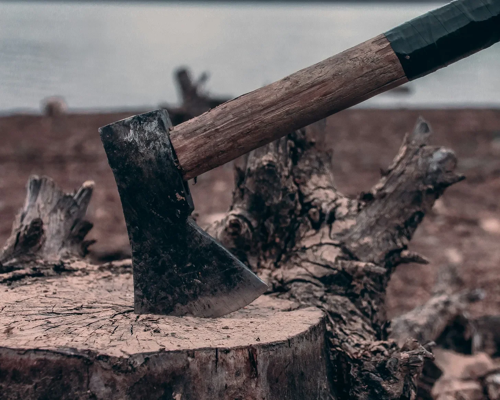

서랍이 삐걱 열렸다, 어둠의 큰 입. 그녀는 망설였다, 닳아 있는 나무를 손가락으로 더듬었다. 오래된 종이와 잊혀진 비밀의 냄새가 짙게 감돌았다. 깊은 숨을 내쉬고 앞으로 기울었다.
몸이 가벼워졌다. 추락하고 있다. 세상이 색과 소리의 만화경으로 빙글빙글 돌아갔다 - 번쩍이는 불빛, 소란스러운 목소리들, 귀에 휘몰아치는 바람 소리. 혼란스럽고 불안했지만, 알 수 없는 것에 대한 흥분도 있었다.
그녀는 쿵 소리와 함께 땅에 떨어졌고, 충격에 뼈가 욱신거렸다. 방향감각을 잃은 채 눈을 깜박였다, 낯선 방을 둘러보았다. 네 개의 문이 그 앞에 서 있었고, 각각은 미지의 세계로 통하는 문이었다. 공기는 무겁고 긴장감이 감돌았으며, 마치 벽 자체가 숨을 참고 있는 것 같았다.
마음을 다잡으며, 그녀는 오른쪽 두 번째 문으로 다가갔다. 나무는 손가락 아래에서 부드럽고 차가웠고, 황동 손잡이가 희미하게 반짝였다. 손잡이를 잡자마자 갑자기 거센 바람이 휘몰아쳤다, 울부짖으며 멈추지 않았다. 그것이 그녀를 휘어잡아 어지러운 나선형으로 끌어올렸다.
세상이 흐릿해졌고, 색들이 어지럽게 섞였다. 더 이상 견딜 수 없을 것 같을 때, 그녀는 원래의 방에 서 있는 자신을 발견했다. 익숙한 가구에 몸을 기대며 균형을 잡았다. 입가에 비꼬는 미소가 걸렸고, 눈에는 결의가 번쩍였다.
“다시 시작해 보자…”
The drawer creaked open, a yawning maw of darkness. She hesitated, fingers tracing the worn wood. The air was thick with the scent of old paper and forgotten secrets. With a deep breath, she leaned forward and fell.
Weightless. Plummeting. The world spun in a kaleidoscope of color and sound - flashes of light, a cacophony of voices, the rush of wind in her ears. It was disorienting, disquieting, and yet there was a thrill in the unknown.
She landed with a thud, the impact jarring her bones. Disoriented, she blinked, taking in the unfamiliar room. Four doors, each a portal to the unknown, stood before her. The air was heavy, charged with a palpable tension, as if the very walls were holding their breath.
Steeling herself, she approached the second door to the right. The wood was smooth and cool under her fingertips, the brass handle gleaming faintly. As her hand grasped the handle, a sudden gust of wind erupted, howling and relentless. It seized her, pulling her upward in a dizzying spiral.
The world blurred, colors bleeding together in a dizzying dance. Just when she thought she couldn’t bear it any longer, she found herself back in the original room, steadying herself against the familiar furniture. A wry smile tugged at her lips, a glint of determination in her eyes.
“Here we go again…”
우드득.
재가 된다.
나무가 아니다.
종이도 아니다.
뼈다.
사제의 발 아래에서 갈비뼈가 으스러졌다. 먼지가 휘날렸다. 오래되어서가 아니라 불경한 압력 때문이었다. 위에서 속삭임이 들려왔다. 라틴어가 아니라 바벨탑 이전의 언어였다.
“굴복하라.”
이 교회가 한때 서 있던 사막의 모래처럼 메마른 웃음소리가 들려왔다. “굴복하라고? 무엇에, 악마야? 우리 모두를 잠식하는 부패에 굴복하라고?”
발이 움직였다. 이번에는 허벅지뼈가 부러지는 소리였다. 사제는 비명을 지르지 않았다. 이를 악물 뿐이었다. 하얗게 질린 손에 들린 성수병이 산산이 조각났다.
“진실에 굴복하라는 것이다.” 속삭임이 뱀처럼 공기를 맛보며 말했다. “네 종족이 퍼뜨리는 거짓의 종말에.”
피 섞인 기침 소리가 들렸다. 사제의 눈은 애원하는 눈빛이 아니었다. 도전적인 눈빛이었다. “내 거짓말은 위안을 준다. 너는?”
침묵이 흐르고 먼지를 날개처럼 휘젓는 한숨 소리가 들려왔다. “나는… 명료함을 제공하지. 망각의 마지막 포옹 전에, 차가운 현실의 입맞춤을 선사하지.”
발이 들어 올려졌다. 자비심 때문이 아니었다. 전략을 바꾼 것뿐이었다. 뼈만 남았지만 강력한 손이 내려왔다. 목을 조르려는 것이 아니었다. 내미는 손길이었다.
“일어서라, 사제. 적으로서가 아니라 증인으로서.”
잠시 침묵이 흘렀다. 사제의 시선이 내밀어진 손으로 향했다가 산산이 조각난 자신의 신성한 의무의 잔해로 향했다. 두려움이 아니라 깊은 깨달음으로 인한 떨림이 그를 뒤흔들었다.
그는 천천히 악마의 손을 잡았다.
Crack.
Ash.
Not wood.
Not paper.
Bone.
Beneath the priest’s boot, a rib cage imploded. Dust swirled, not from age but the unholy pressure. Above, a whisper, not Latin but a tongue predating Babel.
“Yield.”
A chuckle, dry as the desert sands this church once stood upon. “Yield? To what, demon? To the rot that claims us all?”
The boot shifted. Another crack, a femur this time. Not a scream from the priest, but a gritting of teeth, holy water vial shattering in a white-knuckled grip.
“To truth,” the whisper rasped, a serpent tasting the air. “To the end of lies your kind peddles.”
A cough, bloody. The priest’s eyes, not pleading but defiant. “My lies offer comfort. Yours?”
Silence, then a sigh that stirred the dust into a mockery of wings. “Mine offer… clarity. The cold kiss of reality, before the final embrace of oblivion.”
The boot lifted. Not out of mercy, but a change of tactic. A hand, skeletal but strong, reached down. Not to strangle, but to offer.
“Rise, priest. Not as enemy, but as witness.”
A pause. The priest’s gaze flickered to the outstretched hand, then to the shattered remnants of his sacred duty. A tremor ran through him, not of fear but a profound understanding.
Slowly, he took the demon’s hand.
문을 두드리는 소리는 조용한 집 안에 날카롭고 집요하게 울려 퍼졌다. 톰은 벽난로 장식대 위의 시계를 힐끗 보면서 심장이 두근거렸다. 오후 11시 47분. 이 시간에 누가 그의 문 앞에 있을 수 있을까?
그는 망설였다. 불안감이 차가운 해골 손처럼 그의 척추를 타고 올라왔다. 두드리는 소리가 다시 들려왔다. 이번에는 더 급박하게. 톰은 깊은 숨을 들이마시며 마음을 다잡고 문으로 걸어갔다. 그는 문구멍을 통해 밖을 내다보았고, 밤의 그림자 속에 얼굴이 가려진 채로 서 있는 노파를 보았다. 한 손에는 달빛을 희미하게 반사하는 반짝이는 도끼를 들고 있었다. 다른 손에는 빨간 장미 한 송이를 들고 있었다.
톰의 손은 떨렸고, 그는 문을 잠금 해제하고 살짝 열었다. “무슨 일이세요?” 그는 거의 속삭이듯 물었다.
노파는 앞으로 나아갔고, 그녀의 눈은 불안감을 자아내는 강렬함으로 반짝였다. “당신에게 질문이 있습니다,” 오래된 문에서 삐걱거리는 소리처럼 거칠고 고풍스러운 목소리로 그녀가 말했다. “진실하게 대답하면 선물을 받을 것입니다. 거짓으로 대답하면 파멸을 맞이할 것입니다.”
톰은 침을 삼키며, 그의 마음은 빠르게 돌아갔다. “무슨… 무슨 질문이죠?”
노파는 느리고 섬뜩한 미소를 지었다. 그 미소는 불가능할 정도로 넓게 퍼졌다. “당신의 운명이 단 한 번의 선택으로 바뀔 수 있다고 생각합니까?”
톰은 눈을 깜빡이며, 그의 마음은 혼란스러웠다. 그게 무슨 질문인가? 그리고 왜 한밤중에, 완전히 낯선 사람에게 그런 질문을 하는 걸까? 그는 달빛에 불길하게 반짝이는 도끼를 힐끗 보았고, 이마에 식은땀이 흘러내리는 것을 느꼈다. 이건 어떤 병맛 같은 장난이어야 했지만, 그녀의 눈빛은 그렇지 않다고 말해주고 있었다.
“네,” 그는 마침내 말했다. 그의 목소리는 내부의 혼란에도 불구하고 안정적이었다. “그렇습니다.”
노파의 미소는 더욱 넓어졌고, 그녀는 장미를 들고 있는 손을 내밀었다. “그렇다면 이건 당신을 위한 것입니다,” 그녀의 목소리가 부드러워지며 말했다. “당신의 믿음에 대한 증표입니다.”
톰은 손을 뻗어 벨벳 같은 장미 꽃잎을 스쳤다. 안도감이 그를 휩쓸었고, 그는 자신이 숨을 참았다는 것을 깨닫지 못한 채 숨을 내쉬었다. “감사합니다,” 그는 거의 속삭이듯 말했다.
그러나 그의 손가락이 줄기를 감싸는 순간, 노파의 다른 손이 번개처럼 움직였다. 도끼는 빠르고 잔인한 궤적을 그리며 공기를 가르며 내려왔고, 톰의 손목에 닿았다. 고통이 폭발하며 그의 손은 손목에서 깨끗하게 잘려 바닥에 떨어졌다.
톰은 비명을 지르며, 피가 흐르는 팔의 끝을 움켜잡았다. 그의 눈은 공포로 크게 뜨였다. 노파는 그를 내려다보며 어두운 만족감으로 눈을 반짝였다. “기억하세요,” 그녀는 차갑고 단호한 목소리로 말했다. “운명은 항상 친절하지 않습니다. 하지만 항상 공정합니다.”
그렇게 말하고 그녀는 돌아서서 밤 속으로 사라졌다. 톰은 바닥에 쓰러졌고, 장미는 잘린 손 옆에 놓여 있었다. 경고가 그의 마음 속에 울려 퍼졌다.
밖에서 노파는 그림자 속에서 지켜보고 있었다. 그녀의 눈은 어두운 만족감으로 반짝였다. 그녀는 돌아서서 걸어갔다. 그녀의 밤일은 끝났다. 여전히 반짝이는 도끼는 곧 다시 목표를 찾을 것이다. 결국, 운명은 항상 친절하지 않았다.
The knock on the door was a sharp, insistent rap that echoed through the quiet house. Tom’s heart skipped a beat as he glanced at the clock on the mantle. 11:47 PM. Who could possibly be at his door at this hour?
He hesitated, the unease creeping up his spine like a cold, skeletal hand. The knock came again, more urgent this time. Tom took a deep breath, steeling himself, and walked to the door. He peered through the peephole and saw an old woman standing on his porch, her face obscured by the shadows of the night. In one hand, she held a gleaming axe, its blade catching the faint moonlight. In the other, a single red rose.
Tom’s hand trembled as he unlocked the door and opened it a crack. “Can I help you?” he asked, his voice barely more than a whisper.
The old woman stepped forward, her eyes glinting with an unsettling intensity. “I have a question for you,” she said, her voice raspy and ancient, like the creak of an old door. “Answer truthfully, and you shall receive a gift. Answer falsely, and you shall find doom.”
Tom swallowed hard, his mind racing. “What… what’s the question?”
The old woman smiled, a slow, eerie grin that stretched impossibly wide. “Do you think your destiny can be altered by a single choice?”
Tom blinked, his mind reeling. What kind of question was that? And why was she asking it in the middle of the night, to a complete stranger? He glanced at the axe, gleaming ominously in the moonlight, and felt a cold sweat break out on his forehead. This had to be some kind of sick joke, but the look in her eyes told him otherwise.
“Yes,” he said finally, his voice steady despite the turmoil inside him. “I do.”
The old woman’s smile widened even further, and she extended the hand holding the rose. “Then this is for you,” she said, her voice softening. “A token of your belief.”
Tom reached out, his fingers brushing against the velvety petals of the rose. Relief washed over him, and he let out a breath he hadn’t realized he was holding. “Thank you,” he said, his voice barely more than a whisper.
But as his fingers closed around the stem, the old woman’s other hand moved with lightning speed. The axe came down in a swift, brutal arc, slicing through the air and connecting with Tom’s wrist. Pain exploded through him as his hand fell to the floor, severed cleanly at the wrist.
Tom screamed, clutching the bloody stump of his arm, his eyes wide with horror. The old woman stood over him, her eyes gleaming with a dark satisfaction. “Remember,” she said, her voice cold and unyielding, “destiny is not always kind. But it is always just.”
With that, she turned and walked away, disappearing into the night. Tom collapsed to the floor, the rose lying next to his severed hand, the warning echoing in his mind.
Outside, the old woman watched from the shadows, her eyes gleaming with a dark satisfaction. She turned and walked away, her work done for the night. The axe, still gleaming in her hand, would find its mark again soon enough. Destiny, after all, was not always kind.